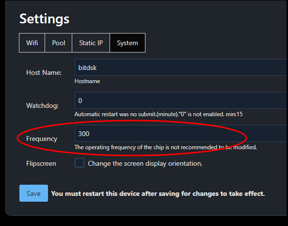

How to change the running frequency of bitdsk?
Modify the operating frequency of the bitdsk chip
Take Chrome as an example. First, open the “settings” page, switch to the “System”, right-click the page and select debug mode
You will see the option to set the frequency

The physical properties of chips of the same model are slightly different, so to achieve the best rate, you need to debug as needed.
Here are some reference data:
N8-T / D12-t / N5.Rexi-T frequency <= 330
N8 frequency <= 300
N5.Rex / N5.Lite / N5.Chi / D12 frequency <= 300
Q2/D10 frequency <= 440
Y5 / D13 frequency <= 465
M0 / D11 frequency <= 510
Modifying this parameter is a relatively dangerous behavior. Try not to increase the amplitude by more than 10 for each test.
If the power supply becomes hot after modification, you may need to replace it with a better power supply.
After modifying this setting, a reboot is required for it to take effect.
Overclocking is a very risky behavior and is a personal behavior. There is a high probability that the power chip or main chip will overheat and burn out. Please be aware.